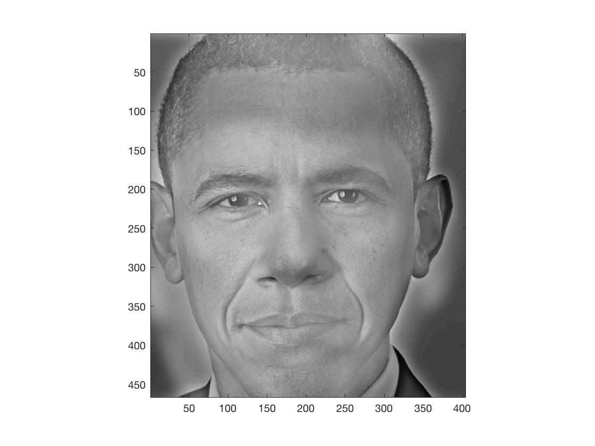

1.3 Not Successful Hybrid 2


Low pass filter sigma: 8.5625.
High pass filter sigma: 8.5625.
I believe the main reasons for this failure are:
1. Both low pass and high pass filters' cutoff frequencies are too low.
2. The outlines of their faces differ greatly.